Listening visuals Cambridge 21Reviewed results: 122 confirmed issue records (86 duplicate pairs, 9 sequence inversions, 1 wrong-Part image, 26 clipped images); 23 suspected records. Counts overlap Parts/assets. Full reviewed CSV. Raw audit.json/findings.csv are detector output, not the final defect list. Fallback scope alone is not a defect. OCR ranges are incomplete hints.
All books · Cambridge 21: 16 Parts · exact current resolver outputCambridge 21 / Test 1 / Part 1
No confirmed/candidate defect detected; not a visual PASS
Q[1, 6]: 1
Q[7, 10]: 1 [Part fallback]
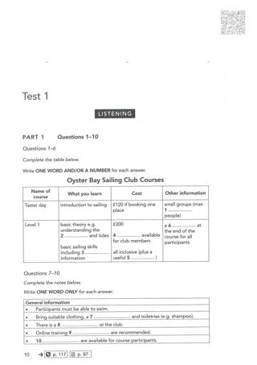
#1 OCR Q[[1, 10], [1, 6], [7, 10]] · 953×1348
Test_1_Part_1_PDF_011.png
assets/public/a792ce37848957d3caff4b92159901241b2fbc3eded3baadc84fb846289cd5c6.png
asset-a792ce37848957d3caff4b92159901241b2fbc3eded3baadc84fb846289cd5c6Cambridge 21 / Test 1 / Part 2
No confirmed/candidate defect detected; not a visual PASS
Q[11, 16]: 1, 2 [Part fallback]
Q[17, 20]: 1, 2 [Part fallback]
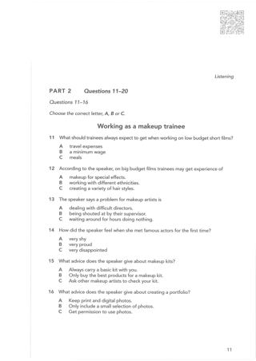
#1 OCR Q[[11, 20], [11, 16]] · 1370×1937
Test_1_Part_2_PDF_012.png
assets/public/c3bc72a8775e5fbab11cd76c1daf97be3952f051a7930c9056afcde30adbf838.png
asset-c3bc72a8775e5fbab11cd76c1daf97be3952f051a7930c9056afcde30adbf838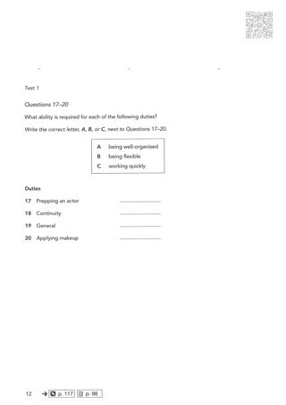
#2 OCR Q[[17, 20], [17, 20]] · 1370×1937
Test_1_Part_2_PDF_013.png
assets/public/7f3ddd1cb8332905ff06f7aad0c02360b9cff8325c4664304393c2865fa0ebbb.png
asset-7f3ddd1cb8332905ff06f7aad0c02360b9cff8325c4664304393c2865fa0ebbbCambridge 21 / Test 1 / Part 3
No confirmed/candidate defect detected; not a visual PASS
Q[21, 22]: 1, 2 [Part fallback]
Q[23, 24]: 1, 2 [Part fallback]
Q[25, 30]: 1, 2 [Part fallback]
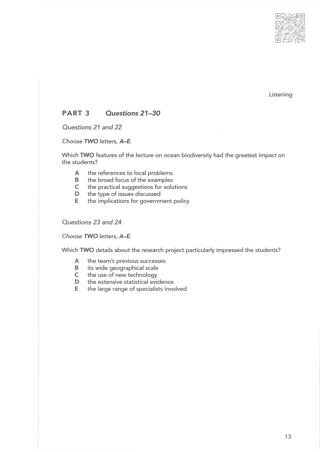
#1 OCR Q[[21, 30]] · 1370×1937
Test_1_Part_3_PDF_014.png
assets/public/3e6132f5ae9961d5617f248e7362899a14e3917174b8000b92395ee7262cc471.png
asset-3e6132f5ae9961d5617f248e7362899a14e3917174b8000b92395ee7262cc471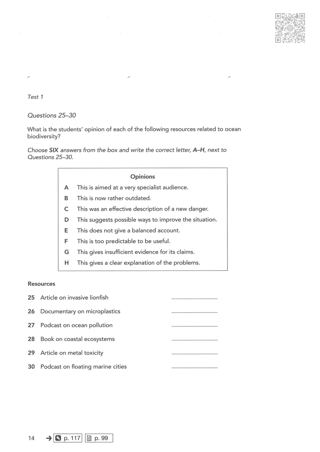
#2 OCR Q[[25, 30], [25, 30]] · 1370×1937
Test_1_Part_3_PDF_015.png
assets/public/cbe519f5d00c025e5564b1bbd5d92d6c4a662aa019e0c11cae115e4e29b92530.png
asset-cbe519f5d00c025e5564b1bbd5d92d6c4a662aa019e0c11cae115e4e29b92530Cambridge 21 / Test 1 / Part 4
No confirmed/candidate defect detected; not a visual PASS
Q[31, 40]: 1 [Part fallback]
#1 OCR Q[[31, 40]] · 953×1348
Test_1_Part_4_PDF_016.png
assets/public/2b35fb01cceeb421888dbf4bbe435581adeb84c16eb5a92d368c4d476097132d.png
asset-2b35fb01cceeb421888dbf4bbe435581adeb84c16eb5a92d368c4d476097132d Cambridge 21 / Test 2 / Part 1
No confirmed/candidate defect detected; not a visual PASS
Q[1, 10]: 1
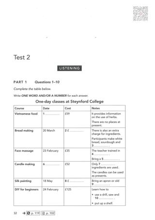
#1 OCR Q[[1, 10]] · 953×1348
Test_2_Part_1_PDF_033.png
assets/public/b06487d6011994b1a06c15a084cfad0f0d693999b16b3e20d08a2c95ce475e24.png
asset-b06487d6011994b1a06c15a084cfad0f0d693999b16b3e20d08a2c95ce475e24Cambridge 21 / Test 2 / Part 2
No confirmed/candidate defect detected; not a visual PASS
Q[11, 12]: 1, 2, 3 [Part fallback]
Q[13, 14]: 1, 2, 3 [Part fallback]
Q[15, 20]: 1, 2, 3
#1 OCR Q[] · 985×840
Test_2_Part_2_Melby_Coal_Mine_Map.png
assets/public/cafb6f007882ca2ce2b1ab7b8e2cedc66b7b65564adea645d8dc259eb6db5af4.png
asset-cafb6f007882ca2ce2b1ab7b8e2cedc66b7b65564adea645d8dc259eb6db5af4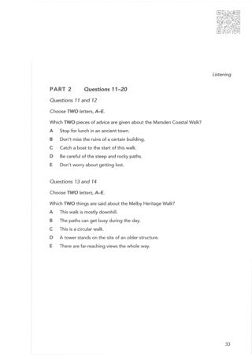
#2 OCR Q[[11, 20]] · 1370×1937
Test_2_Part_2_PDF_034.png
assets/public/5b43306f7be2ad058a6651ddea6130c6dbcfcb41bda66f96bbe01a32b27ce695.png
asset-5b43306f7be2ad058a6651ddea6130c6dbcfcb41bda66f96bbe01a32b27ce695#3 OCR Q[[15, 20], [15, 20]] · 1370×1937
Test_2_Part_2_PDF_035.png
assets/public/0dd7caeb3c15232610602195093ed0413e5f325d40d91b4f22c0d56c13485c3b.png
asset-0dd7caeb3c15232610602195093ed0413e5f325d40d91b4f22c0d56c13485c3b Cambridge 21 / Test 2 / Part 3
V0494:confirmed:duplicate_content; C003:confirmed:clipped_source
Q[21, 22]: 1, 2, 3 [Part fallback]
Q[23, 24]: 1, 2, 3 [Part fallback]
Q[25, 26]: 1, 2, 3 [Part fallback]
Q[27, 30]: 1, 2, 3
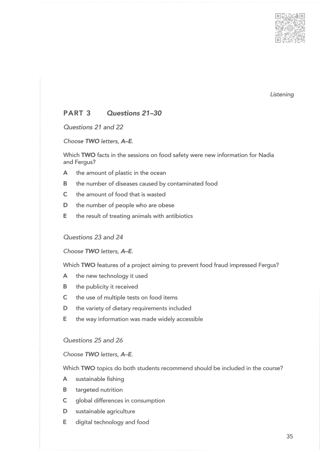
#1 OCR Q[[21, 30]] · 1370×1937
Test_2_Part_3_PDF_036.png
assets/public/4f231c209fa53a02719ddedf98c75983d9ea20ce2ba1d37d01becc3ed1f550c0.png
asset-4f231c209fa53a02719ddedf98c75983d9ea20ce2ba1d37d01becc3ed1f550c0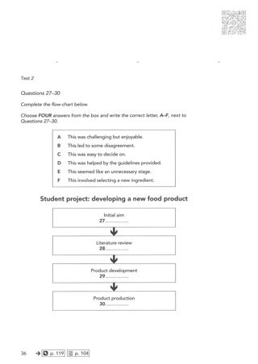
#2 OCR Q[[27, 30], [27, 30]] · 1370×1937
Test_2_Part_3_PDF_037.png
assets/public/74274f69f771eaf1fa66a58faf2b6e0d476f9b75dfa2ed96fba0e75bd2e6bbca.png
asset-74274f69f771eaf1fa66a58faf2b6e0d476f9b75dfa2ed96fba0e75bd2e6bbca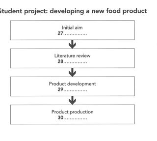
#3 OCR Q[] · 825×740
Test_2_Part_3_Student_Project_Flowchart.png
assets/public/874e297b9de36865ad77bda8d0cd34c11ee6f07d9c31855405b5fef7ddb6690f.png
asset-874e297b9de36865ad77bda8d0cd34c11ee6f07d9c31855405b5fef7ddb6690fCambridge 21 / Test 2 / Part 4
No confirmed/candidate defect detected; not a visual PASS
Q[31, 40]: 1 [Part fallback]
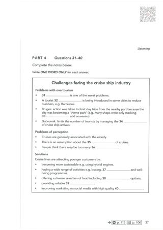
#1 OCR Q[[31, 40]] · 953×1348
Test_2_Part_4_PDF_038.png
assets/public/29c59b253d267c3d010ffc72bdaf51ba70a88ad51430a4390c92b5297d144a00.png
asset-29c59b253d267c3d010ffc72bdaf51ba70a88ad51430a4390c92b5297d144a00Cambridge 21 / Test 3 / Part 1
No confirmed/candidate defect detected; not a visual PASS
Q[1, 10]: 1 [Part fallback]
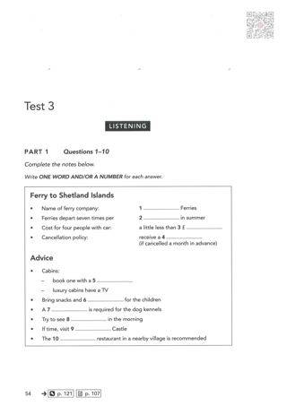
#1 OCR Q[[1, 10]] · 953×1348
Test_3_Part_1_PDF_055.png
assets/public/b680feb807415a020743dac37ed2e26b57bfbc4d8363ca465adfa77a1b20c947.png
asset-b680feb807415a020743dac37ed2e26b57bfbc4d8363ca465adfa77a1b20c947Cambridge 21 / Test 3 / Part 2
No confirmed/candidate defect detected; not a visual PASS
Q[11, 12]: 1, 2 [Part fallback]
Q[13, 14]: 1, 2 [Part fallback]
Q[15, 16]: 1, 2 [Part fallback]
Q[17, 20]: 1, 2 [Part fallback]
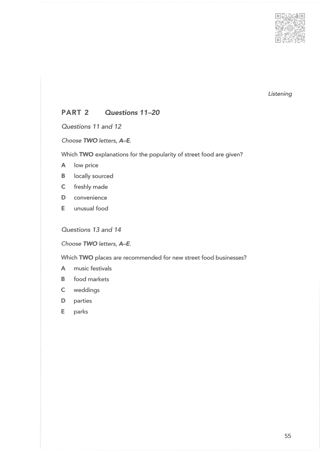
#1 OCR Q[[11, 20]] · 1370×1937
Test_3_Part_2_PDF_056.png
assets/public/739782df0aff27a81a51ee53f661cbddd70c9d2768356d9592d36bbe1ee6f7f1.png
asset-739782df0aff27a81a51ee53f661cbddd70c9d2768356d9592d36bbe1ee6f7f1#2 OCR Q[[15, 16], [17, 20], [17, 20]] · 1370×1937
Test_3_Part_2_PDF_057.png
assets/public/9f43f87b7c080f379eba3cbd7b9fc70d68ce979e754614261253cf58f23c8fa7.png
asset-9f43f87b7c080f379eba3cbd7b9fc70d68ce979e754614261253cf58f23c8fa7Cambridge 21 / Test 3 / Part 3
No confirmed/candidate defect detected; not a visual PASS
Q[21, 22]: 1, 2 [Part fallback]
Q[23, 24]: 1, 2 [Part fallback]
Q[25, 30]: 1, 2 [Part fallback]
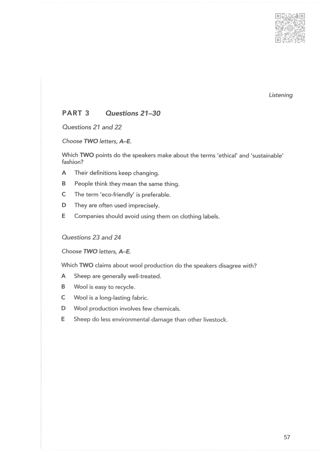
#1 OCR Q[[21, 30]] · 1370×1937
Test_3_Part_3_PDF_058.png
assets/public/cb4b9ba2bfdefabe224987ff6e0622a59610a1cdb2c5dda85d9d085bf917ca8c.png
asset-cb4b9ba2bfdefabe224987ff6e0622a59610a1cdb2c5dda85d9d085bf917ca8c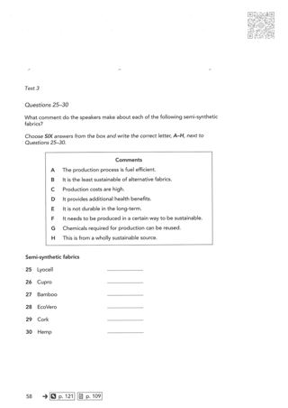
#2 OCR Q[[25, 30], [25, 30]] · 1370×1937
Test_3_Part_3_PDF_059.png
assets/public/5a99e4b6ad54cc01441c29be0071a144accff961197e79cacc29d5bc0287baa7.png
asset-5a99e4b6ad54cc01441c29be0071a144accff961197e79cacc29d5bc0287baa7Cambridge 21 / Test 3 / Part 4
No confirmed/candidate defect detected; not a visual PASS
Q[31, 40]: 1 [Part fallback]
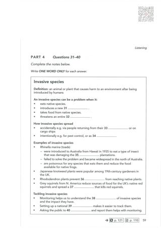
#1 OCR Q[[31, 40]] · 953×1348
Test_3_Part_4_PDF_060.png
assets/public/bb06935a5d870396a6738f690581658209323670d16b23537a4512b0cee02c3e.png
asset-bb06935a5d870396a6738f690581658209323670d16b23537a4512b0cee02c3eCambridge 21 / Test 4 / Part 1
No confirmed/candidate defect detected; not a visual PASS
Q[1, 10]: 1
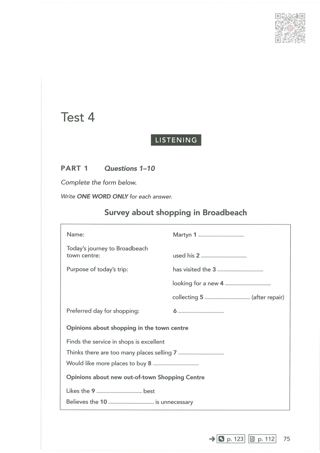
#1 OCR Q[[1, 10]] · 953×1348
Test_4_Part_1_PDF_076.png
assets/public/87ac8ef6258c3e1e99b4a86044a4c81969213b7964caba9eafea3d1ee59d8292.png
asset-87ac8ef6258c3e1e99b4a86044a4c81969213b7964caba9eafea3d1ee59d8292Cambridge 21 / Test 4 / Part 2
No confirmed/candidate defect detected; not a visual PASS
Q[11, 12]: 1, 2 [Part fallback]
Q[13, 14]: 1, 2 [Part fallback]
Q[15, 20]: 1, 2 [Part fallback]
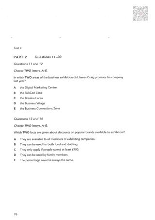
#1 OCR Q[[11, 20]] · 953×1348
Test_4_Part_2_PDF_077.png
assets/public/b384be539da831681725bf6c50d56ae2153d740a50ce4bea313a3f52625d8ddf.png
asset-b384be539da831681725bf6c50d56ae2153d740a50ce4bea313a3f52625d8ddf#2 OCR Q[[15, 20], [15, 20]] · 1370×1937
Test_4_Part_2_PDF_078.png
assets/public/c57ecd4dae004bd465edc472085f24679725e65cb64788ec7f0cc26065e83922.png
asset-c57ecd4dae004bd465edc472085f24679725e65cb64788ec7f0cc26065e83922Cambridge 21 / Test 4 / Part 3
No confirmed/candidate defect detected; not a visual PASS
Q[21, 23]: 1, 2 [Part fallback]
Q[24, 30]: 1, 2 [Part fallback]
#1 OCR Q[[21, 30], [21, 23]] · 1370×1937
Test_4_Part_3_PDF_079.png
assets/public/9025ae092473b0038dc29a50ce8f5ffa6c9e9aaa1bd21589bb0448998dc283ec.png
asset-9025ae092473b0038dc29a50ce8f5ffa6c9e9aaa1bd21589bb0448998dc283ec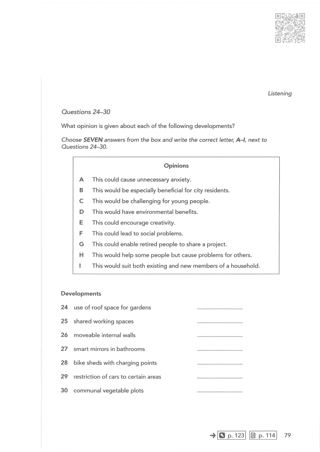
#2 OCR Q[[24, 30], [24, 30]] · 1370×1937
Test_4_Part_3_PDF_080.png
assets/public/3d8d84c1b919ec83519619e5c7283cce7edc04f88d41c29207d1d1784e2b93b4.png
asset-3d8d84c1b919ec83519619e5c7283cce7edc04f88d41c29207d1d1784e2b93b4 Cambridge 21 / Test 4 / Part 4
No confirmed/candidate defect detected; not a visual PASS
Q[31, 40]: 1 [Part fallback]
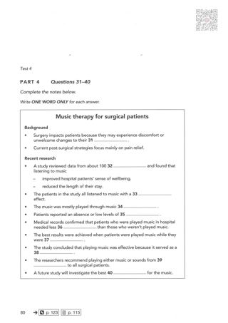
#1 OCR Q[[31, 40]] · 953×1348
Test_4_Part_4_PDF_081.png
assets/public/493b1aeb545f99bb7c4c6e1fcd7c82c3824b471fd63427948754f22b2c2f890a.png
asset-493b1aeb545f99bb7c4c6e1fcd7c82c3824b471fd63427948754f22b2c2f890a